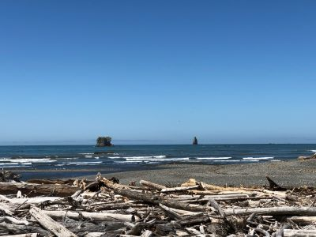
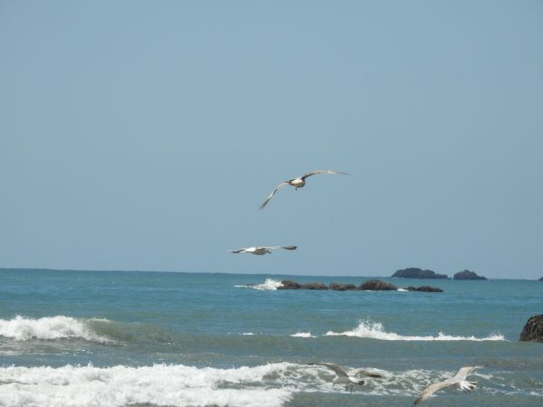
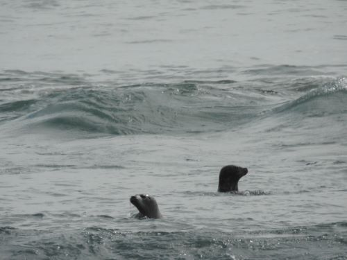
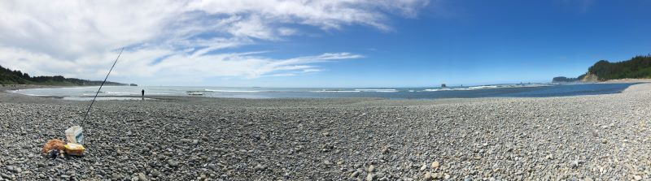
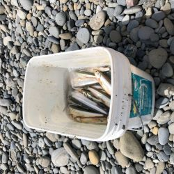
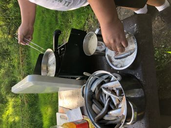
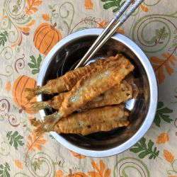

Kalaloch, WA
Finally there was signal so I can send out the post!
The beach, the seagulls, the seals, the fishermen, and the photographer (it's me 😜)! We were all enjoying ourselves.
Smelt - we got 96 fishes. Our fisherman caught 20 fish. He said that he didn't catch them and he was not sure how those fish were caught by him. The Indians next to us caught fish with fishing nets and gave us some. The most interesting thing was that the Indians said that he bought the nets from China！😀
The Indians told us that the reason of so many fish near the shore was that the seals drove them from the sea to the shore. I saw four seals in the sea. Photo 4 only had only two seals. I didn't capture the photo of the four together😟. The seals were having a good meal while we also benefit from their hunting activities！！🤗😀
 
 
  
×